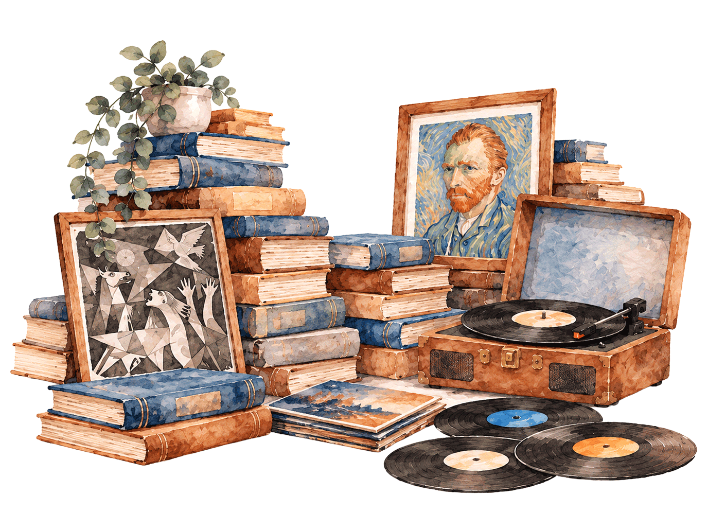
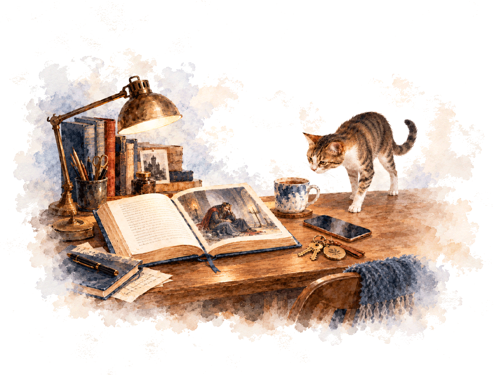
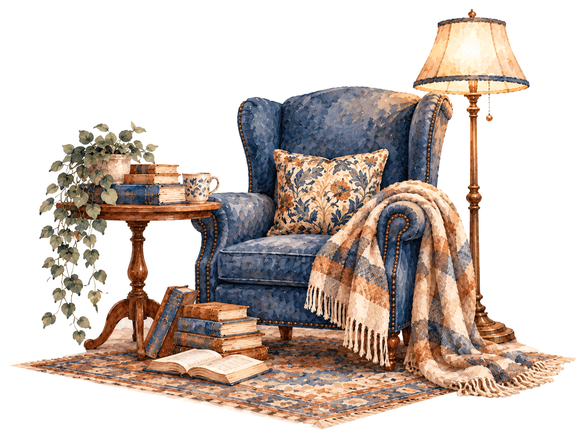
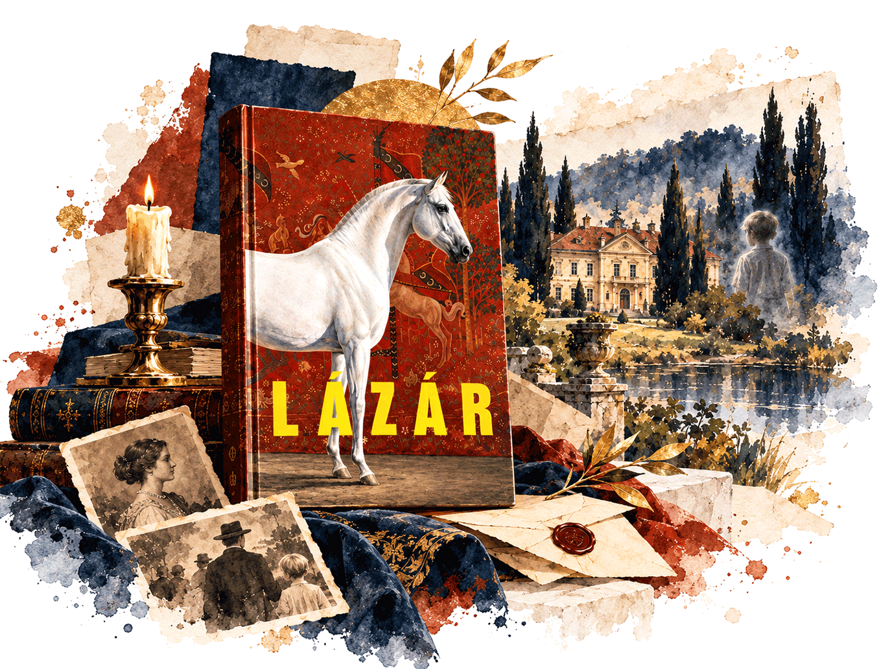

Mert néha egy vers mondja ki helyettünk azt, amit érzünk. Néha egy dal nyit ki bennünk egy rég bezárt ajtót. És néha éppen akkor fedezünk fel valami fontosat magunkról, amikor nem is közvetlenül önmagunkat próbáljuk megfejteni.
Magamról
Gyerekkoromban egy könyv lapjain keresztül bárki lehettem. Törpe, hercegnő, egy ikerpár egyik tagja, árva kislány – vagy akár fiú is. Nagyon korán megtanultam olvasni, és ezzel megnyílt előttem egy trükkös kis varázslatos világ, amelyben nemcsak más életekbe képzelhettem bele magam, hanem a saját világom határait is kitolhattam. Mindig is fantáziadús, írós-olvasós gyerek voltam, és ez a kíváncsiság azóta sem múlt el.
Később színjátszottam, verseket szavaltam. A színpadon ugyanaz a varázslat folytatódott, amit az olvasásban szerettem: belebújhattam valaki más bőrébe, megpróbálhattam az ő szemével látni a világot. Amikor verset mondtam, nemcsak a szavakat akartam szépen elmondani, hanem valahogyan belülről is átélni a költő érzéseit. Ma már úgy gondolom, ezek az élmények sokat formáltak azon, ahogyan az emberekhez és a történeteikhez közelítek.
Aztán jött egy művészeti csoport, ahol filmeztünk, írtunk, összművészeti bulikat és kiállításokat szerveztünk. Őrült időszak volt, a szó legjobb értelmében: tele ötletekkel, kísérletezéssel, közös alkotással és azzal az érzéssel, hogy szinte bármit meg lehet valósítani. Az írás azóta is fontos része az életemnek: a Miről írták a dalt? című zenei novellapályázaton 2026-ban első helyezést értem el. A zene szeretete szintén végigkísért ezeken az éveken. Ma is zenei újságíróként dolgozom, koncertekre járok, és időnként DJ-bulikat is tartok. Az éjszaka varázsa sem kopott meg bennem az évek során. Mindig is volt benne valami titokzatos, valami, ami a nappali világ megszokott rendjén túlra hív.

Ha végignézek ezen az úton, egy közös szálat látok: a képzeletet, a történeteket, a különböző nézőpontok felfedezését és a vágyat, hogy ne csak szemlélői, hanem alakítói is legyünk a világnak. A művészet számomra nem pusztán szemnek kellemes dolog, nem egyszerű kikapcsolódás, és nem is csupán olyasmi, amit értelmezni vagy értékelni lehet. Van benne valami szent: olyan mélységeket képes megmutatni az emberből, amelyekhez a hétköznapokban nem mindig férünk hozzá.
A történetek – legyenek irodalmiak, filmesek vagy zeneiek – nekem magamnak is kapaszkodót jelentettek nehéz élethelyzetekben. Nemcsak segítettek átvészelni bizonyos időszakokat, hanem abban is formáltak, ahogyan a világról, másokról és önmagamról gondolkodom. Jobb és több lettem általuk. Nem adtak kész válaszokat, és nem oldották meg helyettem a problémáimat. Inkább segítettek szavakat találni olyan érzésekhez, amelyeket addig nehéz volt megfogalmaznom. Megmutatták, hogy mások is jártak már hasonló helyeken, és hogy ugyanarra a kérdésre többféle válasz is létezhet. Talán ezért is hiszek abban, hogy a történetekkel való találkozás nem ér véget az utolsó oldalnál.
Mert néha egy vers mondja ki helyettünk azt, amit érzünk. Néha egy dal nyit ki bennünk egy rég bezárt ajtót. És néha éppen akkor fedezünk fel valami fontosat magunkról, amikor nem is közvetlenül önmagunkat próbáljuk megfejteni.
Mi a komplex művészetterápia?
vissza az elejéreA művészet nemcsak arra ad lehetőséget, hogy valamit létrehozzunk, hanem arra is, hogy másképp tekintsünk önmagunkra.
A komplex művészetterápia a művészetek eszközeivel segít kifejezni és feldolgozni az érzéseinket, megfogalmazni a gondolatainkat, és jobban megérteni önmagunkat. A különböző művészeti formák más-más módon szólíthatnak meg bennünket: egy vers, egy zenemű, egy festmény vagy egy filmélmény olyan gondolatokat és érzéseket ébreszthet, amelyekből önmagunk számára is fontos felismerések születhetnek.
A komplex megközelítésben több művészeti ág és kifejezési forma kapcsolódhat össze. A folyamatban helyet kaphat az irodalom, a zene, a vizuális alkotás és más kreatív tevékenység is. Hogy ezek közül melyik kap hangsúlyt, az a csoport céljától és módszertani kereteitől függ.
Receptív és aktív megközelítés
A művészetterápiás munkában megkülönböztethetünk receptív és aktív, alkotó megközelítést.
A receptív munka során már meglévő művekből indulunk ki: verset vagy prózai szöveget olvasunk, zenét hallgatunk, képeket vagy filmrészleteket nézünk. Arra figyelünk, milyen gondolatokat, érzéseket, emlékeket és asszociációkat hívnak elő bennünk.

Az aktív megközelítésben mi magunk is alkotunk. Rajzolhatunk, festhetünk, kollázst készíthetünk, különböző anyagokkal dolgozhatunk, vagy írásban fejezhetjük ki a gondolatainkat és élményeinket.
A két forma egymást kiegészítve is megjelenhet. Egy vers, egy zenemű vagy egy filmjelenet például kiindulópontot adhat egy kreatív feladathoz, amelyet közös reflexió és beszélgetés követ.
Hogyan dolgozom én?
A saját csoportjaimban az irodalom, a zene, a vizuális alkotás, a kreatív írás és a film kínálta lehetőségeket kapcsolom össze. A választott mű vagy élmény nem önmagában áll a középpontban: abból indulunk ki, hogy mit szólít meg bennünk, milyen személyes jelentéseket hordoz, és milyen kérdéseket vet fel.
Egy film szereplőjének döntése például elindíthat egy beszélgetést a saját választásainkról. Egy vers segíthet szavakat találni egy nehezen megfogalmazható érzéshez, egy alkotófeladat pedig lehetőséget adhat arra, hogy más formában közelítsünk egy bennünket foglalkoztató témához.
Nem az alkotás esztétikai értéke a fontos. Nem kell művésznek lennünk, és nincs szükség különleges kézügyességre vagy írói tehetségre. A hangsúly a személyes folyamaton, a saját jelentések felfedezésén és az élmények megosztásán van.
Csoportban mindehhez hozzáadódik a közös gondolkodás. Ugyanaz a mű különböző emberekben egészen más élményeket hívhat elő. Mások nézőpontjai segíthetnek felismerni a saját tapasztalataink egyediségét és a másokéhoz fűződő kapcsolódási pontjainkat.
Kinek szólhat?
Az önismereti művészetterápiás csoportok azoknak kínálhatnak lehetőséget, akik szeretnének tudatosabban kapcsolódni önmagukhoz, nyitottak a művészeti élményekre, és szívesen fedeznek fel új kifejezési formákat.
A részvételhez nem szükséges művészeti előképzettség. Elég a kíváncsiság és a nyitottság arra, hogy egy történet, egy kép, egy zenei vagy filmes élmény segítségével új kérdéseket tegyünk fel magunknak.
A konkrét csoportok célja, tematikája és kerete eltérhet, ezért érdemes mindig az adott program leírását is elolvasni.
Az önismereti művészetterápiás csoport nem helyettesíti a szükséges pszichológiai vagy pszichoterápiás ellátást.
Mi az irodalomterápia?
vissza az elejéreValaki már járt odalent a mélyben, és felhozta nekünk a szavakat.
Jeanette Winterson brit írónő gondolata számomra gyönyörűen megfogalmazza, mit adhat nekünk az irodalom. Néha érzünk valamit, ami ott munkál bennünk, mégsem találjuk hozzá a megfelelő szavakat. Aztán olvasunk egy verset vagy egy regényrészletet, találkozunk egy szereplővel, és egyszer csak felismerjük: igen, pontosan erről van szó. Mintha valaki szavakba öntötte volna mindazt, amit mi még csak érzünk, de magunk sem tudunk megfogalmazni.

Az irodalomterápia – más néven biblioterápia – az irodalmi művek és az írás segítő célú alkalmazása. A szövegek olvasása, értelmezése és a hozzájuk kapcsolódó személyes reflexiók, valamint az írásgyakorlatok lehetőséget teremthetnek az önismeretre, a saját élmények megértésére és új nézőpontok felfedezésére.
Hogyan segíthet egy történet?
Egy irodalmi mű többféleképpen szólíthat meg bennünket.
Magunkra ismerhetünk benne. Egy szereplő dilemmája, vesztesége, döntése vagy öröme emlékeztethet a saját életünkre. Megtapasztalhatjuk, hogy mások is átélnek hasonló érzéseket és kérdéseket, így kevésbé érezhetjük magunkat egyedül.
Új nézőpontokat találhatunk. Egy történet olyan élethelyzeteket, döntéseket vagy megküzdési módokat mutathat meg, amelyekre korábban nem gondoltunk. Nem az a cél, hogy egy szereplő megoldását egyszerűen átvegyük, hanem hogy az ő története segítsen új kérdéseket feltenni a saját életünkkel kapcsolatban.
Kívülről is ránézhetünk arra, ami foglalkoztat bennünket. A történetek szereplőin keresztül olykor könnyebb beszélnünk nehéz érzésekről vagy személyes dilemmákról. Az írás pedig külső formát adhat annak, ami addig csak bennünk kavargott. Ha papírra vetjük a gondolatainkat, egy lépést hátraléphetünk, és más szemszögből is megvizsgálhatjuk őket. Ezt a fajta távolságteremtést az externalizáció fogalmával is összekapcsolhatjuk.
Csak olvasunk, vagy írunk is?
Az irodalomterápiás munka lehet receptív, amikor meglévő irodalmi művekből indulunk ki, és lehet aktív, amikor a résztvevők maguk is írnak. A saját csoportjaimban gyakran összekapcsolom a kettőt. Fontos eszközöm az expresszív írás: ilyenkor a saját gondolatainkat, érzéseinket és személyes élményeinket öntjük szavakba. Nem az a cél, hogy irodalmi értékű szöveg szülessen, hanem hogy figyelmet adjunk annak, ami bennünk zajlik.
Emellett különféle kreatív írásgyakorlatokat is alkalmazok. Elindulhatunk egy vers első vagy utolsó sorából, kiemelhetünk néhány kulcsszót, továbbgondolhatunk egy képet, vagy írhatunk saját verset egy adott téma nyomán. A megadott keretek kapaszkodót adnak, de teret hagynak a személyes gondolatoknak és asszociációknak is. Nem kell írónak lenned, és nem kell előre tudnod, miről szeretnél írni. Sokszor éppen a folyamat során derül ki, mi foglalkoztat igazán.
Miben más egy irodalomterápiás csoport, mint egy könyvklub?
Mindkettőben beszélgethetünk könyvekről, versekről és szereplőkről, de a hangsúly másutt van. Egy könyvklubban elsősorban a műről, annak értelmezéséről és irodalmi sajátosságairól gondolkodunk. Az irodalomterápiás munkában a szöveg a személyes önismereti folyamat kiindulópontjává válik.
Nemcsak azt kérdezzük meg, hogy miről szól a történet, hanem azt is: mit szólít meg bennem? Miért éppen ez a szereplő vagy mondat érintett meg? Milyen saját élményemhez kapcsolódik? Mit látok másképp, miután meghallgattam a többiek gondolatait?
A csoportban ugyanaz a szöveg egészen különböző élményeket hívhat elő. Mások nézőpontjai segíthetnek felfedezni, mennyire különbözőek vagyunk, miközben a történeteinkben közös pontokra is találhatunk.
Számomra az irodalomterápia egyik legnagyobb lehetősége éppen az, hogy nem kell már az elején pontosan tudnunk, mit érzünk, vagy hogyan fogalmazzuk meg a problémánkat. Elég lehet egy vers, egy mondat vagy egy szereplő története. Innen indulhatunk el önmagunk felé.
Ha szereted az irodalmat, de nemcsak olvasni szeretnél róla, hanem a saját életedhez is kapcsolnád, egy irodalomterápiás csoportban új módon találkozhatsz a szövegekkel – és közben önmagaddal is.
Induló csoportok
vissza az elejére1. Slowart irodalomterápiás könyvklub – Lázár

Nelio Biedermann családregényéből kiindulva a családi örökség, az identitás és a kimondatlan történetek nyomába eredünk, miközben azt is felfedezzük, hogyan szólítanak meg bennünket a regény szereplői és konfliktusai.
2026. november 25. · Budapest, II. kerület
Részletek és jelentkezés
2. Északi történetek, belső tájak
A skandináv irodalom, filmek és sorozatok világán keresztül indulunk el a saját belső tájaink felé, kreatív gyakorlatokkal és közös gondolkodással kapcsolva össze a történeteket a személyes élményeinkkel.
2026. november 9-től · Skandináv Ház, Budapest IX. kerület · 4 alkalom
Részletek és jelentkezés
3. Amélie csodálatos élete – a kívülállóságtól a kapcsolódásig
Az Amélie csodálatos élete játékos, különleges világán keresztül gondolkodunk a magányról, a kapcsolódásról és az apró gesztusokról, amelyek közelebb hozhatnak bennünket egymáshoz.
Tervezett időpont: 2026. november–december · Budapest, II. kerület
Részletek és érdeklődés
4. Japán esztétika és önismeret – belső utazás japán inspirációkkal
A japán esztétika olyan szemléleteiből, mint a wabi-sabi és a mono no aware, kiindulva fedezzük fel a tökéletlenség, a mulandóság és a változás szépségét kreatív, önreflexív gyakorlatokon keresztül.
Tervezett indulás: 2026. november vége · Budapest, II. kerület
Részletek és érdeklődés